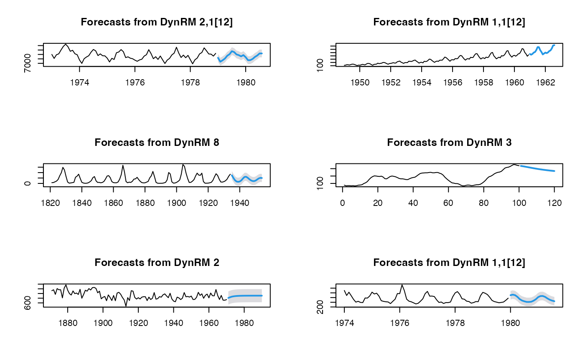

dynrmf.RdAdapted from forecast::nnetar, with alternative fitting functions (see examples)
dynrmf(
y,
h = 5,
level = 95,
fit_func = ahead::ridge,
predict_func = predict,
fit_params = NULL,
type_pi = c("gaussian", "E", "A", "T"),
xreg_fit = NULL,
xreg_predict = NULL,
...
)A numeric vector or time series of class ts
Forecasting horizon
Confidence level for prediction intervals
Fitting function (Statistical/ML model). Default is Ridge regression.
Prediction function (Statistical/ML model)
a list of additional parameters for the fitting function fit_func (see examples)
Type of prediction interval (currently "gaussian", ETS: "E", Arima: "A" or Theta: "T")
Optionally, a vector or matrix of external regressors, which must have the same number of rows as y. Must be numeric.
Future values of external regressor variables.
additional parameters
a list; an object of class forecast.
The function summary is used to obtain and print a summary of the
results.
The generic accessor functions fitted.values and residuals
extract useful features.
Hyndman, R. J., & Athanasopoulos, G. (2018). Forecasting: principles and practice. OTexts.
Hyndman R, Athanasopoulos G, Bergmeir C, Caceres G, Chhay L,
O'Hara-Wild M, Petropoulos F, Razbash S, Wang E, Yasmeen F (2021).
forecast: Forecasting functions for time series and linear models. R
package version 8.14, <URL: https://pkg.robjhyndman.com/forecast/>.
# Example 0: with Ridge regression
par(mfrow=c(3, 2))
plot(dynrmf(USAccDeaths, h=20, level=95))
plot(dynrmf(AirPassengers, h=20, level=95))
plot(dynrmf(lynx, h=20, level=95))
plot(dynrmf(WWWusage, h=20, level=95))
plot(dynrmf(Nile, h=20, level=95))
plot(dynrmf(fdeaths, h=20, level=95))

# Example 1: with Random Forest
if (FALSE) {
require(randomForest)
par(mfrow=c(3, 2))
plot(dynrmf(USAccDeaths, h=20, level=95, fit_func = randomForest::randomForest,
fit_params = list(ntree = 50), predict_func = predict))
plot(dynrmf(AirPassengers, h=20, level=95, fit_func = randomForest::randomForest,
fit_params = list(ntree = 50), predict_func = predict))
plot(dynrmf(lynx, h=20, level=95, fit_func = randomForest::randomForest,
fit_params = list(ntree = 50), predict_func = predict))
plot(dynrmf(WWWusage, h=20, level=95, fit_func = randomForest::randomForest,
fit_params = list(ntree = 50), predict_func = predict))
plot(dynrmf(Nile, h=20, level=95, fit_func = randomForest::randomForest,
fit_params = list(ntree = 50), predict_func = predict))
plot(dynrmf(fdeaths, h=20, level=95, fit_func = randomForest::randomForest,
fit_params = list(ntree = 50), predict_func = predict))
}
# Example 2: with SVM
if (FALSE) {
require(e1071)
par(mfrow=c(2, 2))
plot(dynrmf(fdeaths, h=20, level=95, fit_func = e1071::svm,
fit_params = list(kernel = "linear"), predict_func = predict))
plot(dynrmf(fdeaths, h=20, level=95, fit_func = e1071::svm,
fit_params = list(kernel = "polynomial"), predict_func = predict))
plot(dynrmf(fdeaths, h=20, level=95, fit_func = e1071::svm,
fit_params = list(kernel = "radial"), predict_func = predict))
plot(dynrmf(fdeaths, h=20, level=95, fit_func = e1071::svm,
fit_params = list(kernel = "sigmoid"), predict_func = predict))
}